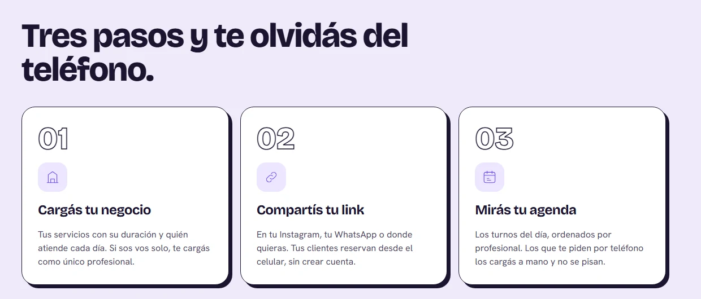
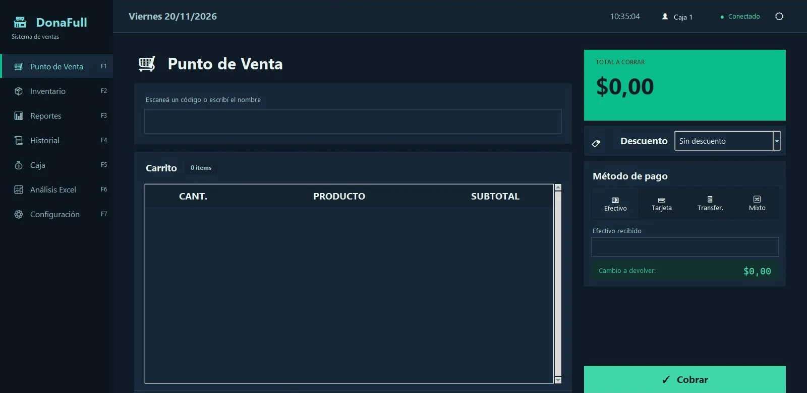
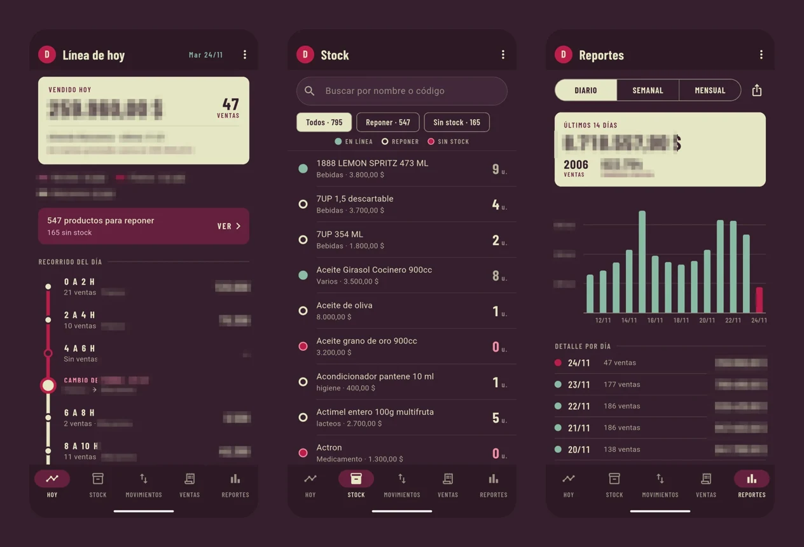
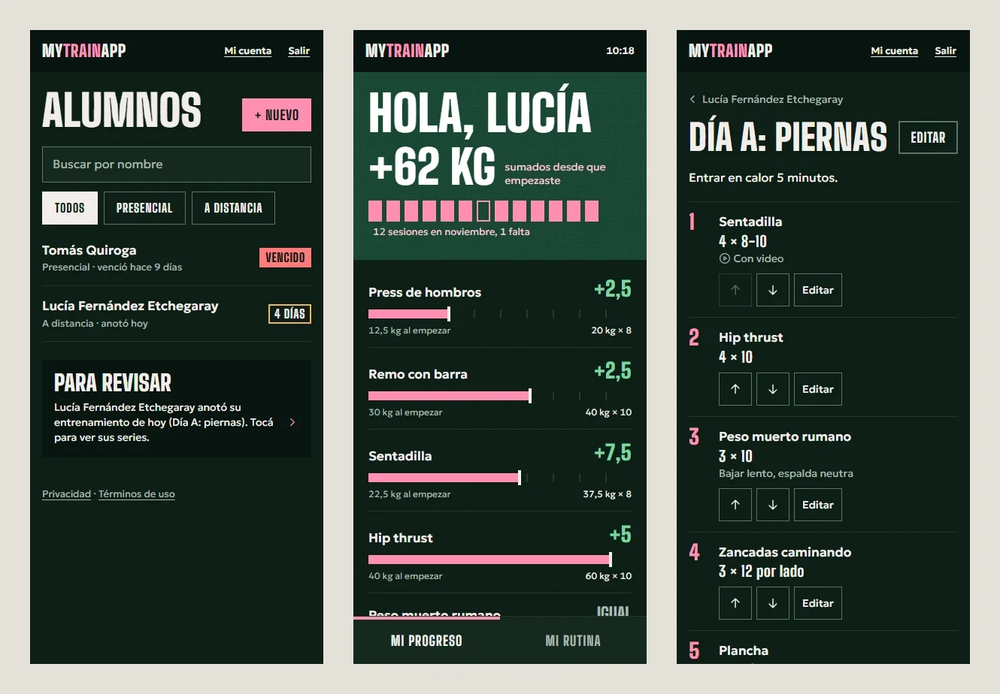
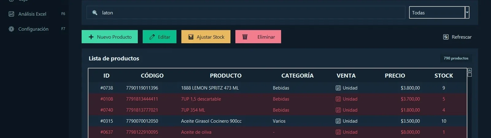

01
Apps web
Se usan desde el navegador, en la compu o el celular. Ideal para turnos, reservas, paneles y todo lo que tus clientes tocan.
TurnosPanelesCobros online
Sobre mí
Programo sistemas para negocios y, cuando cierro la compu, entreno y comparto contenido de fitness. Las dos cosas me enseñaron lo mismo: lo que se hace todos los días es lo que da resultados.
Empecé en 2025 con un generador de boletas para una metalúrgica. Después vino un sistema de caja para un drugstore, una app de turnos que es producto mío y una app para una entrenadora y sus alumnos.
Hoy trabajo con inteligencia artificial para construir más rápido, y cada cosa la reviso, la pruebo y la uso yo antes de que llegue a tu negocio.
Enfoque
No vendo promesas. Hago sistemas que se usan todos los días: un drugstore cobra con el mío, una entrenadora sigue a sus alumnos y cualquier negocio puede probar TurnoFacil hoy.
Selección

DonaFull
DonaFull Monitor · Nuevo TurnoFacil
TurnoFacil

MyTrainAppResultados reales
Ventas en un mes cobradas con DonaFull en un drugstore.
Archivos de pruebas automáticas que cuidan a TurnoFacil.
Sistemas construidos y en uso desde 2025.
Servicios
Las tres arrancan igual: entender cómo trabajás hoy y qué te hace perder tiempo. Después elegimos la que mejor encaja.

Se usan desde el navegador, en la compu o el celular. Ideal para turnos, reservas, paneles y todo lo que tus clientes tocan.

Corren en la compu del local, aunque se corte internet. Para caja, stock, cierres de turno y reportes.
Para que vos o tus clientes tengan todo en el bolsillo: las ventas del día, el stock, rutinas o avisos, en tiempo real.
Proceso
Hecho con IA, revisado a mano.
Miro cómo trabajás hoy: el cuaderno, el Excel, el WhatsApp. Con eso entiendo qué hace falta y qué no.
Qué voy a construir, cuánto tarda y cuánto sale. Sin letra chica: sabés qué vas a recibir antes de empezar.
Programo con Claude Code. La IA me ahorra horas de tipeo y me deja el tiempo para lo que importa: que funcione como lo necesitás.
Cada cambio pasa por pruebas automáticas y por mis manos. Nada se publica sin que yo lo haya usado.
Dominio, servidor y los cambios que vayan surgiendo. No te dejo un programa suelto: te dejo algo andando.
Contacto
Contame qué necesita tu negocio o tu empresa y te respondo yo, sin vueltas.
Preguntas frecuentes
Depende de lo que haga. Después de una primera charla te paso un presupuesto cerrado, con lo que incluye y el plazo.
Un sistema chico, unas semanas. Antes de empezar te doy una fecha de entrega y te muestro avances en el camino.
No. Me contás cómo trabajás con tus palabras y yo me encargo del resto. Al terminar te explico cómo usarlo.
No, todo se puede hacer a distancia. Si estás en San Juan, también nos podemos juntar.
La IA escribe rápido; las decisiones, la revisión y las pruebas las hago yo. Así llego antes sin que se note en el resultado.
Lo dejo publicado y andando, y te acompaño con los ajustes y cambios que vayan surgiendo.